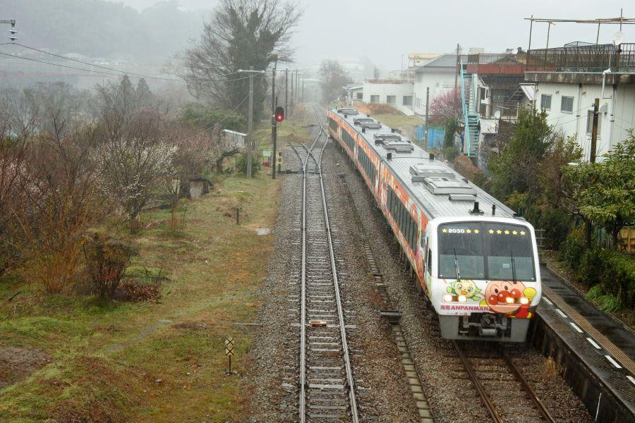
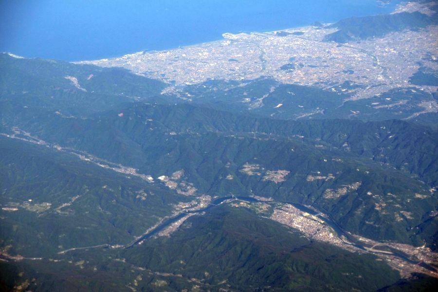

静かな無人駅で、みどころを見つける旅 < 大杉駅 / 高知県大豊町 >
山中の静かな無人駅のプラットホームに立つ、大きな三角柱。
「日本一の大杉」
「美空ひばり ゆかりの地」
と大きく書かれています。
列車でも自家用車でも、通常は通り過ぎてしまう場所ですが、一見すると何もない無人駅であっても、そこや周辺にはいくつかの見所があります。
とまレール大杉
大杉駅(おおすぎえき / 高知県大豊町)
バンガローのような三角屋根が特徴的な駅舎は "とまレール大杉" と名付けられた、地元の大豊中学校の生徒たちが関わって建てられたもの。
元々 地元産の杉材を使用した駅舎がありましたが、平成16年(2004)に不審火により焼失。翌17年に現在の駅舎が再建されました。
近隣の路線図・料金表
周辺の拠点となる 「高知」 「阿波池田」 の、だいたい真ん中と言える位置。
赤字は特急の発車時刻。
特急停車駅ですが 全ての特急列車が停車するわけではありません。
また 各駅停車の本数が少ない区間で、お昼前後に 2～3時間列車が発着しない時間帯があるので、予め計画を立ててから利用しましょう。
プラットホームに出てみます。
山中の無人駅
プラットホームは、線路が一面二線敷かれた島式ホーム。
跨線橋など階段はなく、バリアフリーと言って良い構造です。
時折 特急列車が高速で通過するので、警告音・接近音には よく耳を傾けて、線路を横断するようにしましょう。
大杉駅の駅名標と、プラットホーム上にある小さな小屋。
大杉駅のホーム待合所。
暖房設備こそないものの、戸や窓を閉めることができる構造なので、雨風をしのぐことができます。
路線の地点を知るキロポスト

②番線(高知・中村方面)
の山側に目をやると、
「87」
と記された標柱が立っています。
"距離標(きょりひょう)"
通称 "キロポスト" と呼ばれるもので、路線の起点からの距離を示すもの。
－ 土讃線 －
(香川県)
0.0... 多度津
11.3... 琴平
(徳島県)
43.9... 阿波池田
65.5... 大歩危
(高知県)
87.2... 大杉
126.6... 高知
198.7... 窪川
※ 主な駅。単位はkm
鉄道会社の規定によって異なるが、キロポストは 基本的に1kmごとに立てられる。
トンネルや鉄橋のような キロポストを立てるスペースに制約がある地点では、それらを避けて 500m単位・100m単位のものが見られる。
また、駅のような大きな目標物となる地点は 小刻みな単位で立てられます。
鉄道の起点からの距離なんて、普通の乗客からしたら 全く気にも留めなければ、必要な情報ではありません。
しかしながら乗務員・指令・保線作業員にとっては、不変の距離数字を通じて 路線の詳細地点を知り 共有するために、欠かせないものとなっています。
歌謡界の女王ゆかりの地
三角柱のところにやってきました。
"日本一の大杉"
"美空ひばりゆかりの地"
と
"碁石茶の里"
とも記されています。こちらも大豊中学校の生徒の制作。
昭和22年(1947)4月。
当時9歳の美空ひばりは、公演旅行中にこの場所で交通事故に遭う。それはバスごと崖から転落する大事故で 下を流れる穴内川まで落ちれば全員死亡の大惨事になっていたであろうところを、一本の桜の枝が バスのバンパーに引っかかり、転落を免れ 九死に一生を得た。
一か月の大豊町での療養を経て 高知の病院に転院する際、ひばりは 近くにあった日本一の杉の大杉(八坂神社)を訪れ、
「日本一の歌手にしてください」
と祈願した。その後の活躍は皆が知るところです。
半数が通過する特急南風

下り特急列車がやってきました。
"特急南風"
ヘッドマークのイメージは土佐湾にも接岸する 鯨(クジラ)
岡山で新幹線からの乗換客を迎えた列車は、瀬戸大橋を渡り 土讃線を走って高知まで軽快かつ ディーゼル列車らしく力強く駆け抜けます。
一部の列車は高知から先 中村・宿毛にも乗り入れますが、平成31年春のダイヤ改正で延長運転は廃止になるようです。また現在使用されている こちらの2000系気動車は、運用開始から30年近く経っているため、近い将来 新型車両への置き換えが予定されています。
閑けさが魅力...無人駅
上り 各駅停車がやってきました。
実は午後に駅に到着して、この列車が来るまで 2時間以上時間があったのですが、駅の周辺を散策して 何度か通過する特急列車の写真を撮って...
としているうちに、すぐに時間が経ちました。この間で誰も駅に来ることは無く、この各駅停車でも 自分以外の乗客の乗り降りはありません。
世の中 人があまり来ない静かな場所は数多くありますが、無人駅には 静けさ、というよりか閑けさと書いた方がしっくりくるような、独特の空気感があります。
駅という 元々は人々の暮らしの中心にあった場所が、その地位を失ってしまった哀愁感。かつてはそんなことはなかっただろうに...
(駅施設はあくまで列車利用者のための施設ですが)
読書なんかにも向いてそうです。
大杉駅周辺のみどころ
町内殆どが山林に覆われた大豊町。
駅から徒歩圏内の天然記念物・杉の大杉
四国最古の建造物であり国宝指定を受けている・豊楽寺薬師堂(ぶらくじやくしどう)
のような文化財や、
清流・吉野川の流れを生かしたラフティング
星の観測に適した山荘梶が森
と言った大自然。
ひばりさんの名前を冠した名物食堂など。
通過するだけでは勿体ない見所が いくつもあります。
大杉駅
< 自家用車 >
高松駅から 約1時間20分、98km
高知龍馬空港から 約40分、34km
< 公共交通機関 >
JR土讃線 大杉駅
※ 主な地点からの最速・最短距離
関連記事

2017,10/23 手作りの田舎そばを食べに、そばやへ < そばや / 徳島県 >

2017,11/26 四国の鉄道が繋がった瞬間を見届けた立会人 < 土讃線三縄駅 / 徳島県 >

2018,1/30 やまびこ打線で一世を風靡した高校がある街の珍地名 < 阿波池田駅 / 徳島県 >

2018,5/18 空から見る香川県 < 香川県中讃・西讃ほか >

2018,6/17 各駅停車が通過する駅？ 山中のスイッチバック駅 < 新改駅 / 高知県香美市 >

2018,12/8 ユニークな駅名の高知県の鉄道交通中心地 < 後免駅 / 高知県南国市 >

2019,1/1 雄大な太平洋を存分に楽しむことができるローカル線・前編 < ごめん・なはり線 / 高知県東部 >